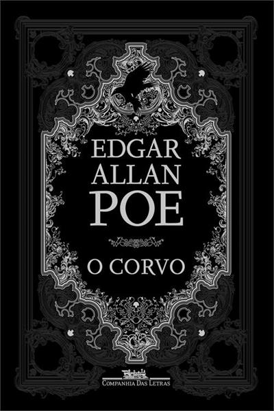

"A morte de uma mulher bela é, sem sombra de dúvida, o tema mais poético do mundo." Assim Edgar Allan Poe justificaria a gênese de "O corvo", poema publicado sob pseudônimo originalmente em 1845. Mas o que faz com que esses versos hipnotizantes sobre perda e desejo, escritos de modo tão calculado pelo mestre do terror há quase dois séculos, tenham merecido tantos elogios e tamanha controvérsia?
Nesta edição, o leitor vai conhecer as traduções mais notáveis de "O corvo" para a nossa língua ― as de Fernando Pessoa e Machado de Assis ―, analisadas pelo poeta, tradutor e professor Paulo Henriques Britto, que também traduz três textos fundamentais de Poe sobre poesia ("A filosofia da composição", "A razão do verso" e "O princípio poético") e examina a faceta ensaística do escritor.